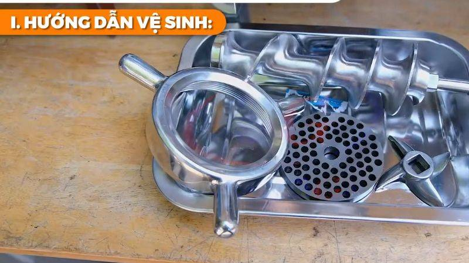
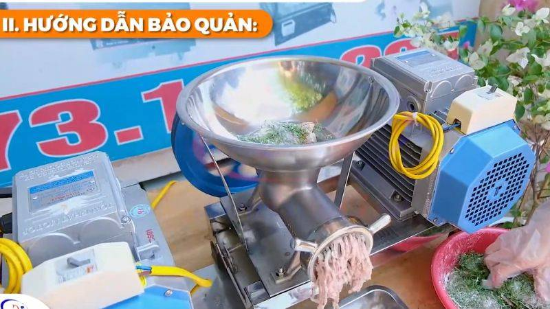

Máy xay thịt công nghiệplà
thiết bị nhà bếp quan trọng giúp bạn xay nhuyễn thịt nhanh chóng và dễ
dàng. Tuy nhiên, để đảm bảo vệ sinh an toàn thực phẩm và kéo dài tuổi
thọ cho máy, bạn cần vệ sinh và bảo quản máy đúng cách sau mỗi lần sử
dụng.

Tầm quan trọng của việc vệ sinh và bảo quản máy xay thịt công
nghiệp
Đảm bảo an toàn thực phẩm: Vệ sinh máy thường
xuyên giúp loại bỏ các cặn thịt, dầu mỡ còn sót lại trong máy, ngăn
ngừa sự phát triển của vi khuẩn gây hại có thể ảnh hưởng đến chất
lượng và độ an toàn của thực phẩm.
Duy trì hiệu suất hoạt động: Việc vệ sinh sạch sẽ
các bộ phận như lưỡi dao, trục xoắn và đầu đùn thịt giúp máy hoạt
động hiệu quả, tránh tình trạng nghẽn hoặc kém hiệu suất do cặn bẩn
tích tụ.
Kéo dài tuổi thọ máy: Bảo quản đúng cách, như để
máy ở nơi khô ráo và thoáng mát, giúp ngăn ngừa gỉ sét và hư hỏng
các bộ phận, từ đó kéo dài tuổi thọ của thiết bị.
Tiết kiệm thời gian và công sức: Máy xay thịt
công nghiệp hiện đại được thiết kế với các chi tiết dễ dàng tháo
rời, giúp việc vệ sinh và bảo quản trở nên nhanh chóng và đơn giản
hơn so với các loại máy thô sơ trước đây.
Duy trì vệ sinh chung: Việc vệ sinh máy xay thịt
thường xuyên góp phần duy trì môi trường làm việc sạch sẽ, đặc biệt
quan trọng trong các cơ sở chế biến thực phẩm quy mô lớn.
Hướng dẫn vệ sinh máy xay thịt công nghiệp
Dưới đây là các bước vệ sinh và bảo quản máy xay thịt công
nghiệp:
Tháo rời các bộ phận: Tách riêng các bộ phận có
thể tháo rời như khoang chứa thịt, bộ lưỡi dao, và các
phụ kiện khác.
Rửa sạch các bộ phận: Sử dụng nước ấm và xà phòng
rửa chén để làm sạch kỹ các bộ phận, đặc biệt là khoang chứa thịt và
bộ lưỡi dao.
Loại bỏ cặn thịt: Dùng bàn chải mềm hoặc miếng
xốp để cọ rửa kỹ, loại bỏ hoàn toàn các cặn thịt bám dính.
Khử trùng: Sau khi rửa sạch, bạn có thể ngâm các
bộ phận trong dung dịch nước ấm pha loãng với giấm hoặc nước chanh
để khử trùng và loại bỏ mùi.
Lau khô: Dùng khăn sạch lau khô tất cả các bộ
phận sau khi rửa và khử trùng.
Vệ sinh phần thân máy: Dùng khăn ẩm lau sạch phần
thân máy, chú ý không để nước xâm nhập vào động cơ.
Lắp ráp và bảo quản: Sau khi các bộ phận đã khô
hoàn toàn, lắp ráp lại máy và bảo quản ở nơi khô ráo, thoáng mát.

Mẹo bảo quản máy xay thịt công nghiệp hiệu quả
Bôi một lớp mỏng dầu ăn lên các bộ phận kim loại để bảo vệ chúng
khỏi oxy hóa và gỉ sét.
Nếu không sử dụng máy trong một thời gian dài, cho vài lát dứa vào
xay để làm sạch họng máy trước khi bắt đầu xay thịt.
lắp các chi tiết của máy đúng cách, đặc biệt là phần đầu đùn, để
tránh làm hỏng máy.
Tuân thủ hướng dẫn sử dụng của nhà sản xuất, không để máy hoạt
động quá tải hoặc liên tục trong thời gian dài để tránh làm hỏng
động cơ.